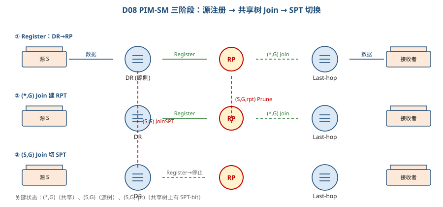
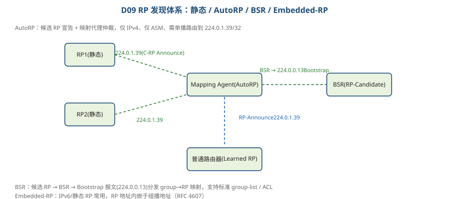

ch05 PIM-SM 状态机与 RP 发现体系
来源：Aweya Ch5（P.241–P.380，状态机/定时器/DR/Register/Join-Prune/Assert/刷新/RP 发现/SSM）、Williamson Ch7–Ch8、P.148–P.213、Ch12（P.314–P.351）、iPexpert Ch4、Ch7（静态 RP）、Ch8（AutoRP）、Ch9（BSR） 配图：D08 PIM-SM 三阶段｜D09 RP 发现体系


学习目标
- 完整复述 PIM-SM 的三种状态：(*,G)、(S,G)、(S,G,rpt) 及其相互转换；
- 说清 Register / Register-Stop、(*,G) Join、(S,G) Join、(S,G,rpt) Prune 的语义；
- 掌握 SPT 切换的触发条件与 SPT-bit 机制；
- 掌握四种 RP 发现机制（静态 / AutoRP / BSR / Anycast-RP / Embedded-RP）的原理、适用与配置；
- 独立完成一次 PIM-SM + BSR 的端到端部署与验证。
1. PIM-SM 两个阶段（Aweya 5.2.1）
阶段一：构建共享树（RPT） 阶段二：切换到源树（SPT）

1.1 阶段一：源注册
- 源发组播包 → 源所在网段的 DR 收到（RPF 检查通过）；
- DR 把组播包封装进 Register 报文，发往 RP（组播包被"套娃"进单播）；
- RP 收到 Register → 解封装、创建
(S,G)状态（注意：此时是共享树上的 (S,G)）→ 向源侧 DR 回 Register-Stop（当不需要继续注册时）； - 同时，RP 把组播包从共享树向下泛洪。
1.2 阶段二：接收者加入
- 接收端主机发 IGMP Report → Last-hop DR（收侧 DR）感知到本地有成员；
- 收侧 DR 向 RP 发送 **(*,G) Join**（沿树向上游跳）；
- 每跳路由器：若已有
(*,G)状态则加入出接口列表；否则新建(*,G)状态并继续向上发 Join； - 到达 RP：RP 把出接口列表加入
(*,G)，并把该组流量沿共享树下发。
1.3 阶段三：SPT 切换（最关键）
触发条件（满足其一）：
| 条件 | 说明 | 默认配置 |
|---|---|---|
收侧 DR 收到 (S,G) Join |
有人请求源树 | 启用（默认行为） |
| RPT 上的速率超阈值 | ip pim spt-threshold |
0 kbps（即立即切换） |
| 特定组不切换 | ip pim never-switch（或 no ip pim spt-threshold infinity） |
按组配置 |
切换动作（Aweya 5.14）：
- 收侧 DR 向上游发送
(S,G) Join→ 建立源树路径； - 收侧 DR 向 RP 发送
(S,G,rpt) Prune→ 剪断共享树上该支路； - 在共享树相关状态上置 SPT-bit（T 标志），通知上游"别再往这送这个源的流"。
SPT-bit 与 RP-bit 的区别：
- T（SPT-bit）：置在
(S,G)与(*,G)的出接口上，语义"这个方向已经走 SPT 了"； - R（RP-bit）：置在
(S,G)表项上，语义"这个源已经从 RPT 切换出去"。
2. 状态机细节（Aweya 5.3）
2.1 (*,G) 状态
- 存在于从 RP 到接收者的路径上；
- 出接口列表 = 所有"该组有接收者"的分支；
- 存在意义：为共享树提供转发能力。
2.2 (S,G) 状态
- 存在于从源到 RP（经 Register 后的下游泛洪）以及 SPT 路径上；
- 存在意义：为某个特定源提供转发能力。
2.3 (S,G,rpt) 状态
- 只在共享树（RPT）上存在，表示"这个源在共享树上还有一条被剪过/正在剪的支路"；
- 收侧 DR 发
(S,G,rpt) Prune后产生； - RP 收到后置 RP-bit，并停止向该方向转发该源的流量。
2.4 状态转换表
| 事件 | 状态变化 |
|---|---|
| 收侧收到 IGMP Report | 创建/加入 (*,G)，向上发 (*,G) Join |
收侧收到 (S,G) Join（或本地源） |
创建 (S,G)，向上发 (S,G) Join；向 RP 发 (S,G,rpt) Prune |
| RP 收到 Register | 创建 (S,G) |
| 主机发 Leave | 收侧 DR 发 (*,G) Prune 向上；若无成员则删除 (*,G) |
| 收侧切换到 SPT | 共享树侧置 SPT-bit，删除 (S,G,rpt) |
3. PIM-SM 定时器（Aweya 5.4）
| 定时器 | 默认 | 作用 |
|---|---|---|
| Keepalive（RP 侧） | 60 s | RP 保持 (S,G) 活跃 |
| Register Retry | 60 s（可配 5–90） | RP 未收到 Register 时重试 |
| RP Announce（AutoRP） | 60 s | 候选 RP 宣告间隔 |
| RP Announce Age | 180 s | 宣告老化 |
| Mapping Agent Discovery | 28 s | AutoRP 映射代理宣告间隔 |
| BSR RP-Announce | 60 s | BSR 刷新 RP 候选 |
| BSR RP-Announce Age | 180 s | |
| BSR Bootstrap Age | 180 s | |
| Join/Prune Holdtime | 210 s | 状态保活 |
| Assert Holdtime | 90 s |
4. RP 发现机制全景

4.1 静态 RP
ip pim rp-address 10.1.1.1
ip pim rp-address 10.1.1.1 239.1.0.0 255.255.0.0 ! 带 group-list
- 简单可靠，但多 RP 时需要人工保证 Load-Balancing（哈希算法见 4.6）；
- 大规模网络不推荐。
4.2 AutoRP（仅 IPv4、仅 ASM）
两个角色：
| 角色 | 职责 | 地址 |
|---|---|---|
| C-RP（Candidate RP） | 宣告"我愿意当这个组的 RP" | 宣告到 224.0.1.39（RP-Announce） |
| MA（Mapping Agent） | 仲裁并宣告"组 X 的 RP 是 Y" | 宣告到 224.0.1.39（RP-Mapping-Announce）/ 224.0.1.40（Mapping-Discovery） |
流程：
- MA 周期性发 224.0.1.40（Mapping-Discovery）宣告自己是 MA；
- C-RP 收到后，向 224.0.1.39 发 RP-Announce（含 RP 地址 + 组列表）；
- MA 收集 C-RP 的宣告，按组列表做最具体匹配（longest-match）决定最终 RP，并发 RP-Mapping-Announce 到 224.0.1.39；
- 普通路由器监听 224.0.1.39，学习 Group→RP 映射（
show ip pim rp mapping）。
限制与要点：
- 依赖单播路由：必须能单播到达 224.0.1.39/32，否则整个机制失效；
- 依赖 IGMP：接收 224.0.1.39 需要有 IGMP 成员关系（PIM DR 自动处理）；
- 不能跨 AS（AutoRP 只在域内）；
- 需要给 MA 与 RP 之间放行 224.0.1.39/32。
ip pim auto-rp mapping-agent 10.1.1.1 ! 在 MA 上
ip pim auto-rp mapping-agent 10.1.1.1 ttl 15
interface Gi0/1
ip multicast ttl 15 ! 关键：AutoRP 组播 TTL 必须够
ip pim send-rp-announce if-type Gi0/1 scope 16 ! 在 C-RP 上
4.3 BSR（Bootstrap Router）——现代推荐
角色：
| 角色 | 职责 | 报文 |
|---|---|---|
| RP-Candidate | 宣告"我愿意当 RP" | Candidate-RP-Advertisement → 224.0.1.39 |
| BSR | 收集候选，选主并分发映射 | Bootstrap Message → 224.0.0.13 |
流程：
- RP-Candidate 周期发 Candidate-RP-Advertisement（到 224.0.1.39，TTL 1）给 BSR；
- BSR 依据 BSR Priority（高者胜）、RP 优先级（高者优）选主；
- BSR 周期发 Bootstrap Message（224.0.0.13，TTL 255）携带 Group→RP 映射与 BSR-RP-Info；
- 全域路由器学习映射（
show ip pim rp mapping）。
相对 AutoRP 的优势：
- 可跨 AS（BSM 是 224.0.0.13，TTL 可调）；
- 支持标准 group-list / ACL（
ip pim bootstrap bsr的 group-list 支持前缀列表）； - 映射信息单一来源（BSR），无 MA 仲裁歧义；
- 业界标准（RFC 5059）。
! BSR 上
ip pim bootstrap bsr 10.1.1.1 hash-len 30 priority 100
interface Gi0/1
ip multicast ttl 255
! RP-Candidate 上
ip pim rp-candidate loopback
interface Gi0/1
ip multicast ttl 255
4.4 Anycast-RP
动机：RP 是单点。Anycast-RP 让多个 RP 使用同一个 IP 地址（通常是一个 /32 Loopback，通过 BGP/OSPF 在全网宣告）。
原理：接收端 Join 到 Anycast 地址时，路由收敛使流量走最近的 RP；源注册也到最近的 RP。
必须解决的问题：源注册到 RP-A、接收者 Join 到 RP-B 时，RP-B 上没有源信息 → 需要两种机制之一：
| 机制 | 做法 | 特点 |
|---|---|---|
| MSDP Anycast-RP | RP 之间用 MSDP 交换 SA；SA 携带 RP-id（原始 RP 地址） 与 Originating RP | 成熟、可跨域；MSDP Anycast-RP 场景下 SA 必须包含 RP-id |
| PIM Anycast-RP | RP 之间用 MSDP 同步 Register 报文副本 | 简化版，依赖 MSDP 但不依赖 SA 语义 |

! 三个 RP 都配置同一个 Anycast 地址 + 各自的 RP-id
ip pim rp-address 10.100.100.100
ip pim anycast-rp 10.100.100.100 10.1.1.1 ! 本机 RP-id
! MSDP peer
ip msdp peer 10.2.2.2 connect-source Loopback0
ip msdp originator-id Loopback0 ! MSDP Anycast-RP 必需
4.5 Embedded-RP（IPv6 为主，RFC 4607）
思路：把 RP 地址编码进组播地址本身，接收端从组地址直接推导 RP，不需要 MSDP。
- 编码方式：组地址（如
FF7x:...::/96）低 32 bit 编码为FF02::FFxx:xxxx（即 RP 地址）； - 前提：接收端能通过单播路由解析该地址；
- 优势：天然跨域（IPv6 组播不需要 MSDP）——这是 IPv6 相对 IPv4 的重大简化。
4.6 RP 哈希与负载分担
多 RP 时的分配由 RP Hash Function 决定（Aweya 5.16.7）：
- Hash 输入 = 组地址（不是源地址）→ 同一组的所有源都映射到同一个 RP；
- 目的：保证共享树完整、避免跨 RP 转发；
- 不同实现哈希算法不同（Cisco 默认基于组地址的 CRC）。
因此：多 RP 负载分担是按组而非按流量的。若业务组数量少而流量大，哈希不均会导致 RP 倾斜。
5. 排障命令速查
show ip pim rp mapping ! 学到的 Group→RP 映射（关键！）
show ip pim rp mapping [group] [detail]
show ip pim rp-address ! 本机静态配置
show ip pim rp metric ! ?
show ip pim tunnel ! ?（旧命令）
show ip pim interface ! 各接口模式、DR、邻居
show ip pim neighbor ! 邻居明细
show ip pim rp-info ! ?（RP 候选信息）
show ip pim bsr ! BSR 候选
show ip pim rp-candidate ! 本机 RP 候选状态
show ip pim sparse ! ?
show ip pim state-refresh ! ?
show ip msdp peer ! MSDP 邻居
show ip msdp summary ! SA 数量与缓存
show ip msdp sa-cache ! SA 缓存
6. 生产案例（9 例）
案例 5-1：RP 未配置/未学习到，注册报文被丢弃
现象：show ip mroute 中源侧有 (S,G) 但无下游；接收端加入后无流量。
定位：
show ip pim rp mapping ! 是否为空
show ip pim rp-address ! 本机配置
show ip pim interface ! RP 接口是否 up
debug ip pim register ! Register 是否发出
debug ip msdp / debug ip pim bsr ! AutoRP/BSR 学习过程
根因：静态 RP 未配置，或 AutoRP/BSR 未学到映射（常见于 TTL 不足）。
处置：配置静态 RP 作为兜底；检查 ip multicast ttl 是否足够（AutoRP 需 TTL ≥ 15，BSR BSM 需 TTL 255）。
复盘：RP 发现机制必须"双保险"——主用动态发现 + 静态兜底。
案例 5-2：AutoRP 完全失效（TTL 不足）
现象：show ip pim rp mapping 空；debug ip igmp 看不到 224.0.1.39 的成员关系。
定位：在 MA 上 debug ip pim autorp 看不到 Announce 发出；抓包发现 TTL=1。
根因：接口默认 ip multicast ttl 1，AutoRP 的 224.0.1.39 是链路本地控制组（TTL 1），跨路由器后即消失。
处置：相关接口配置 ip multicast ttl 15（AutoRP 推荐值）。
复盘：AutoRP/BSR/PIM Hello 的 TTL 必须在接口上显式规划，配置模板要固化。
案例 5-3：BSR 学到的 RP 与静态 RP 冲突
现象：同一组在不同设备上被映射到不同 RP，出现"部分通部分不通"。
定位：show ip pim rp mapping 在不同设备上结果不一致；show ip pim rp-address 有静态配置。
根因：静态 RP 与 BSR 映射冲突（Cisco 上静态 RP 优先级高于 BSR，但优先级规则依版本而异），造成映射不一致。
处置：统一 RP 发现方式，删除冗余配置；变更前 clear ip pim rp mapping 清理。
复盘：一个组只能有一个"权威" RP 发现机制。
案例 5-4：RP 负载不均（哈希倾斜）
现象：3 台 RP，CPU 与带宽严重不均，1 台近 100%。
定位：show ip pim rp mapping 统计各 RP 承担的组数；业务组数量少而集中。
根因：RP 哈希以组地址为输入，组少时必然倾斜；且部分业务组为大流量组。
处置：调整业务组地址分布；或对大流量组使用 Anycast-RP（就近接入）；或把大组单独规划。
复盘：RP 负载规划要基于"组数 × 组流量"，不能只看组数。
案例 5-5：SPT 切换导致共享树带宽突增
现象：切到 SPT 后，某些链路上流量比预期大（RP 到接收者的共享树路径上仍有余量）。
定位：show ip mroute 239.1.1.1 detail 中 (S,G) 已有 JT 标志，但共享树接口仍在列表中且带 T。
根因：SPT-bit 已置但共享树出接口未及时剪除，或 (S,G,rpt) Prune 未送达 RP。
处置：检查 RP 上 (S,G) 的 R（RP-bit）是否置位；检查收侧 DR 的 (S,G,rpt) Prune 是否发出。
复盘：SPT 切换后要验证三件事：(S,G) 有 J、共享树侧有 T、RP 侧有 R。
案例 5-6：接收者离开后组播仍转发（Prune 未生效）
现象：客户端下线后，共享树分支仍在转发组播。
定位：show ip mroute 中该分支的 Join 计时器仍在刷新；show ip igmp groups 显示已无成员。
根因：主机用的是 IGMPv1（无 Leave）；或 IGMPv2 的 Leave 被 ACL 过滤。
处置：确认终端 IGMP 版本；放行 224.0.0.2（IGMPv2 Leave 目标）。
复盘：组播的"退组"完全依赖 IGMP 版本，终端资产必须管控。
案例 5-7：Register 隧道化导致大包分片与丢包
现象：源为大包视频（>1400 B），RP 收包有分片/丢包，媒体花屏。
定位：show ip mroute 源侧 (S,G) 频繁闪断；RP 上出现 Register 重传。
根因：Register 是单播封装，MTU 较小；若路径 MTU 小于封装后尺寸则分片，丢一片即整包丢失。
处置：增大路径 MTU（ip mtu）或降低源端包长；评估改用 SSM（无 Register）。
复盘：Register 封装开销 ≈ 28~32 字节，源侧路径 MTU 要预留。
案例 5-8：Anycast-RP 下源注册与接收者 Join 落在不同 RP
现象：部分接收者收不到流，报错 "no route to source" 或组播中断。
定位：show ip msdp summary 无 SA；show ip msdp sa-cache 空；MSDP peer 已建立。
根因：MSDP Anycast-RP 未配置 ip msdp originator-id，SA 消息中 RP-id 缺失，接收侧 RP 无法识别源归属。
处置：配置 ip msdp originator-id Loopback0；确认 SA 中携带 RP-id。
复盘：MSDP Anycast-RP 的 originator-id 是必配项，配置模板必须写死。
案例 5-9：RP 故障后组播中断（无冗余）
现象：RP 宕机后，所有组播业务中断（接收端已加入但无流量）。
定位：show ip pim rp mapping 显示该组只有 1 个 RP；该 RP down。
根因：静态单 RP，无 Anycast/冗余。
处置：部署 Anycast-RP + MSDP（或 SSM 彻底去 RP 化）。
复盘：RP 冗余不是"做两台"，而是"让两个 RP 对客户端表现为同一个"——这正是 Anycast 的意义。
7. 自测清单
- 完整描述 PIM-SM 从源发起到接收者收流的全部报文顺序（含 Register/Register-Stop、(*,G) Join、(S,G) Join、(S,G,rpt) Prune）。
- SPT-bit（T）与 RP-bit（R）分别置在什么表项上？语义区别是什么？
- SPT 切换的触发条件有哪几个？默认配置下是什么行为？
- AutoRP 的 MA 与 C-RP 分别做什么？用哪两个组地址？
- AutoRP 与 BSR 在跨域能力、TTL 要求、group-list 支持上的差异？
- 为什么 RP 哈希以组地址而非源地址为输入？
- Anycast-RP 要解决"源注册到 A、接收者 Join 到 B"的什么问题？两种解法分别是什么？
8. 延伸阅读
- Aweya Ch5（P.241–P.380）：PIM-SM 状态、定时器、DR、Register、Join/Prune、Assert、刷新、RP 发现、SSM 扩展
- Williamson Ch7–Ch8（P.148–P.213）、Ch12（P.314–P.351）
- iPexpert Ch4（P.4-1–4-45）、Ch7、Ch8、Ch9
- 延伸：
RFC 7761（PIM-SM）、RFC 5059（BSR）、RFC 3917（AutoRP）、RFC 4607（Embedded-RP）